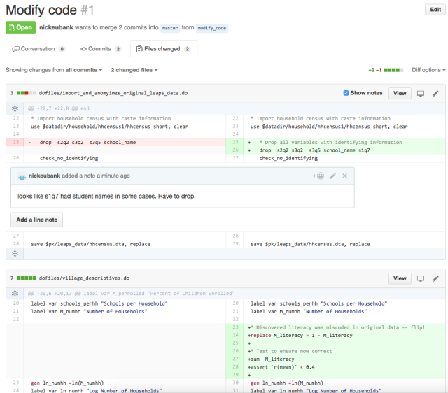

Defensive Programming#
In recent years, the social sciences have been struggling with a wave of papers that have turned out to have problems not because of problems of theory, or choice of statistical models, but rather because of simple programming errors. In perhaps the most embarassing, Steven Levitt (co-author of the acclaimed Freakonomics, and winner of one of the most prestigious awards in economics) had a paper about the political explosive (at least in the US) topic of abortion and crime that turned out to be wrong because he hadn’t put a set of controls into a regression he thought he had (may require sign-in, though I think you can see without paying). Moreover, as some of my own work has shown, the replication packages that come with a substantial number of political science papers have problems, often generating results that do not match those in the published paper.
In reading this, it’s natural to think that the reason we find problems in the code behind published papers is carelessness or inattention on behalf of authors, and that the key to minimizing problems in our code is to be more careful. The truth, I have come to believe, is more subtle: humans are effectively incapable of writing error-free code, and that if we wish to improve the quality of the code we write, we must start learning and teaching coding skills that help maximize the probability our mistakes will be found and corrected.
I myself once firmly believed the fallacy that the key to preventing errors was “to be more careful.” Indeed, I fear this belief may have colored the tone of of my past work on this subject in unproductive ways. Over the last several years, however, my research has brought me into close contact with computer scientists, and I discovered that computer scientists’ mentality about programming is fundamentally different from the mental model I had been carrying around as a social scientist. Computer scientists assume programmers will make mistakes, and instead of chiding people to “just be careful,” they have developed a battery of practices to address the problem. These practices – often referred to as “defensive programming” skills – are designed to (a) minimize the probability mistakes occur and (b) maximize the probability that mistakes that do occur are caught.
In this tutorial, we’ll cover a number of these defensive programming practices with an eye towards their application in the context of applied data science. I did not invent any of these practices, but you will likely find that the way I present them (and the use-cases I emphasize) will differ from most other presentations you will find online. That is because in this tutorial, I will focus on the type of applied data analysis common in the social sciences, natural science, or business analysis, rather than the type of “software engineering” applications where these methods are most commonly applied.
Adding Tests#
If we could only adopt one practice to improve the quality of our code, my vote would be for the addition of tests. Tests are simple true-false statements users place in their code. A test checks for a certain condition (like whether the sample size in a regression is what you expect), and if the condition is not met, stops your code and alerts you to the problem. Right now, many users may say “Yeah, I always check that kind of stuff by hand when I’m writing my code. Why do I need to add tests?” The answer is four-fold:
Tests are executed every time your code is run. Most of us check things the first time we write a piece of code. But days, weeks, or months later, we may come back, modify code the occurs earlier in our code stream, and then just re-run the code. If those changes lead to problems in later files, we don’t know about them. If you have tests in place, then those early changes will result in an error in the later files, and you can track down the problem.
It gets you in the habit of always checking. Most of us only stop to check aspects of our data when we suspect problems. But if you become accustomed to writing a handful of tests at the bottom of every file – or after ever execution of a certain operation (I’m trying to always including them after a merge), we get into the habit of always stopping to think about what our data should look like.
Catch your problems faster. This is less about code integrity than sanity, but a great upside to tests is that they ensure that if a mistake slips into your code, you become aware of it quickly, making it easier to identify and fix the changes that caused the problem.
Tests catch more than anticipated problems. When problems emerge in code, they often manifest in lots of different ways. Duplicate observations, for example, will not only lead to inaccurate observation counts, but may also give rise to bizarre summary statistics, bad subsequent merges, etc. Thus adding tests not only guards against errors we’ve thought of, but may also guard against errors we don’t anticipate during the test writing process.
Writing Tests#
Tests are easy to write in any language, but given this courses’ focus on Python, will discuss it here. For examples of tests in Stata and R, you can see some resources I created towards the bottom of this site.
In Python, tests are written using the assert keyword:
x = 7
y = 5
# Make sure that x is greater than y
assert x > y
# Make sure that x is odd
assert x % 2 == 1
assert can also be used with vectors, though doing so requires one additional step. Since logical tests applied to vectors return vectors of Booleans, we have to specify how to evaluate that whole vector using .any() (returns True if any entries in the vector are True) and all() (only returns True if all the entries are True). For example:
# Load some country-level national statistics
import pandas as pd
world = pd.read_csv(
"https://raw.githubusercontent.com/nickeubank/"
"practicaldatascience/master/Example_Data/world-small.csv"
)
world.sample(5)
| country | region | gdppcap08 | polityIV | |
|---|---|---|---|---|
| 60 | Iran | Middle East | 11666 | 10.000000 |
| 82 | Malaysia | Asia-Pacific | 14215 | 13.000000 |
| 77 | Libya | Middle East | 15402 | 3.000000 |
| 25 | China | Asia-Pacific | 5962 | 3.000000 |
| 120 | Sri Lanka | Asia-Pacific | 4560 | 15.333333 |
# Make sure everyone's GDP per capita estimates are positive:
assert (world["gdppcap08"] > 0).all()
If you don’t use .all() or .any(), you will get this error saying “the truth value of a Series is ambiguous,” meaning “how do you want me to go from a vector of Trues and Falses to a single True or False?”
assert world["gdppcap08"] > 0
---------------------------------------------------------------------------
ValueError Traceback (most recent call last)
/var/folders/fs/h_8_rwsn5hvg9mhp0txgc_s9v6191b/T/ipykernel_51318/1328044753.py in ?()
2 # saying "the truth value of a Series is ambiguous," meaning
3 # "how do you want me to go from a vector of Trues and Falses to a single
4 # True or False?"
5
----> 6 assert world['gdppcap08'] > 0
~/opt/miniconda3/lib/python3.10/site-packages/pandas/core/generic.py in ?(self)
1464 @final
1465 def __nonzero__(self) -> NoReturn:
-> 1466 raise ValueError(
1467 f"The truth value of a {type(self).__name__} is ambiguous. "
1468 "Use a.empty, a.bool(), a.item(), a.any() or a.all()."
1469 )
ValueError: The truth value of a Series is ambiguous. Use a.empty, a.bool(), a.item(), a.any() or a.all().
When should I write tests?#
Great question! More on that in the last section of this tutorial (let’s focus on principles before we get too far into specific implementation questions).
Never Transcribe#
We’ve already covered tricks to maximize the probability we catch our mistakes, but how do we minimize the probability they will occur? If there is anything I learned working as the Replication Assistant at the Quarterly Journal of Political Science testing people’s replication packages, it is that authors should never transcribe numbers from their statistical software into their papers by hand. This was easily the largest source of replication issues we encountered, as doing so introduced two types of errors:
Mis-transcriptions: Humans just aren’t built to transcribe dozens of numbers by hand reliably. If the error is in the last decimal place, it doesn’t mean much, but when a decimal point drifts or a negative sign is dropped, the results are often quite substantively important.
Failures to Update: We are constantly updating our code, and authors who hand transcribe their results often update their code and forget to update all of their results, leaving old results in their paper.
So, how do you avoid this problem? Use tools that will directly export your results into plain text or formatted tables you can use in the program where you are working. For example, statsmodels in Python can export regression tables to lots of formats, R has stargazer, and Stata has estout.
I also suggest users not only do this for tables - which is increasingly common - but also statistics that appear in text. For example, to put a single number into \(\LaTeX\), you just generate the number you want to put in your paper, convert it to a string, and save it to disk as a .tex file (e.g. exported_statistic.tex). Then in your paper, simply add a \input{exported_statistic.tex}call, and LaTeX will insert the contents of that .tex file verbatim into your paper.
For example, here’s a way to save a single number to put into LaTeX:
# Here's a number I want in a paper
x = 1 / 3
# Format it...
x = f"{x:.2f}"
# Now write to disk!
import os
os.chdir("/users/nce8/desktop")
with open("test_file.tex", "w") as text_file:
text_file.write(x)
# Now I'm gonna erase
# the file so I don't clutter my desktop. :)
os.remove("test_file.tex")
While this type of integration works best for LaTeX, it can still be accomplished with many other programs like Word. For example, most packages that generate.tex files that can be easily integrated into LaTeX also often have options to export to .txt or .rtf files that you can easily use in Word. These tools can be used to generate tables can either be (a) copied whole-cloth into Word by hand (minimizing the risk of mis-transcriptions that may occur when typing individual values), or (b) using Word’s Link to Existing File feature to connect your Word document to the output of your code in a way that ensures the Word doc loads the most recent version of the table every time Word is opened. Some great tips for combining R with Word can be found here.
Style Matters#
Formatting isn’t just about aesthetics, it also makes it easier to read your code and thus recognize potential problems. Here are a few tips:
Use informative variable names. Don’t call something
var212if you can call itunemployment_percentage. Informative names require more typing, but they make your code so much easier to read. Moreover, including units in your variables names (percentage,km, etc.) can also help avoid confusion.Comment! Comments help in two ways. First, and most obviously, they make it easy to figure out what’s going on when you come back to code days, weeks, or months after it was originally written. And second, it forces you to think about what you’re doing in substantive terms (“This section calculates the share of people within each occupation who have college degrees”) rather than just in programming logic, which can help you catch substantive problems with code that may run without problems but will not actually generate the quantity of interest.
Use indentation. Indentation is a way of visually representing the logical structure of code – use it to your advantage!
Let your code breathe. In general, you should put a space between every operator in your code, and feel free to use empty lines. Space makes your code more readable, as illustrated in the following examples:
# Bad
def foo(a, b):
return a / 12 + b
# Good
def convert_feet_and_inches_to_inches(feet, inches):
return feet * 12 + inches
You can find a great Python style guide here. Also, be aware that Python style is generally guided by the “bible” of Python style, a document known as “PEP8” you’ll hear talked about everywhere. A full style guide for R can be found here, and a Stata style guide can be found here.
Don’t Duplicate Information#
Tricks to minimize the probability of errors often require a little more sophisticated programming, so they won’t be for everyone (tests, I feel, are more accessible to everyone). Nevertheless, here’s another valuable practice: Never replicate information.
Information should only be expressed once in a file. For example, say you want to drop observations from a dataset if a person’s income has ever dropped below 20,000. You could do this like this:
df = pd.DataFrame(
{
"income_2019": [10000, 20000, 30000, 40000, 50000],
"income_2018": [50000, 40000, 30000, 20000, 10000],
"income_2017": [50000, 20000, 30000, 40000, 50000],
}
)
df = df[
(df["income_2019"] < 20000)
| (df["income_2018"] < 20000)
| (df["income_2017"] < 20000)
]
df
| income_2019 | income_2018 | income_2017 | |
|---|---|---|---|
| 0 | 10000 | 50000 | 50000 |
| 4 | 50000 | 10000 | 50000 |
And indeed, this would work. But suppose you decided to change that cutoff from 20,000 to 30,000. The way this is written, you’ve opened yourself up to the possibility that in trying to change these cutoffs, you may change two of these but forget the third (something especially likely if the uses of the cutoff aren’t all in exactly the same place in your code). A better way of expressing this that avoids this possibility is:
df = pd.DataFrame(
{
"income_2019": [10000, 20000, 30000, 40000, 50000],
"income_2018": [50000, 40000, 30000, 20000, 10000],
"income_2017": [50000, 20000, 30000, 40000, 50000],
}
)
income_threshold = 20000
df = df[
(df["income_2019"] < income_threshold)
| (df["income_2018"] < income_threshold)
| (df["income_2017"] < income_threshold)
]
df
| income_2019 | income_2018 | income_2017 | |
|---|---|---|---|
| 0 | 10000 | 50000 | 50000 |
| 4 | 50000 | 10000 | 50000 |
Written like this, if you ever decide to go back and change the common cutoff, you only have to make in one place, and there’s no way to make the change in some cases but forget others.
Collaboration#
Until now, the focus of this piece has been on individual coding practices that minimize the risk of errors. But as social science becomes increasingly collaborative, we also need to think about how to avoid errors in collaborative projects. In my experience, the way most social scientists collaborate on code (myself included, historically) is to place their code in a shared folder (like Dropbox or Box) and have co-authors work on the same files. There are a number of problems with this strategy, however:
Participants can ever be certain about the changes the other author has made. Changes may be obvious when an author adds a new file or large block of code, but if one participant makes a small change in an existing file, the other authors are unlikely to notice. If the other authors then write their code assuming the prior coding was still in place, problems can easily emerge.
There is no clear mechanism for review built into the workflow. Edits occur silently, and immediately become part of the files used in a project.
I am aware of three strategies for avoiding these types of problems:
The first and most conservative solution to this is full replication, where each team member conducts the full analysis independently and members then compare results. If results match, authors can feel confident there are no problems in their code. But this strategy requires a massive duplication of effort – offsetting many of the benefits of working on teams – and requires both authors be able to conduct the entire analysis, which is not always the case.
The second strategy is compartmentalization, in which each author is assigned responsibility for coding specific parts of the analysis. Author A, for example, may be responsible for importing, cleaning, and formatting data from an outside source while Author B is responsible for subsequent analysis. In this system, if Author B finds she need an additional variable for the analysis, she ask Author A to modify Author A’s code rather than making modifications herself. This ensures responsibility for each block of code is clearly delimited, and changes are unlikely to sneak into an Author’s code without their knowledge. In addition, authors can also then review one another’s code prior to project finalization. But there is no process for continuous review of code, and if Author A modifies a variable that later gets passed to Author B and somehow the communication about what is being passed from person to person break down… bad things can happen.
The final strategy is to use version control (i.e. git and github), which is by far the most robust solution and the one most used by computer scientists, but also the one that requires the most upfront investment in learning a new skill.
Version control does several things for preventing errors. First, as the name implies, it keeps track of every version of your code that has ever existed and makes it easy to go back to old versions. This service is often provided by services like Dropbox, it is much easier to review old versions and identifying differences between old and new versions in git than through a service like Dropbox, whose interface is sufficiently cumbersome and most of us never use it unless we accidentally delete an important file.
But what really makes version control exceptional is that it makes it easy to (a) keep track of what differs between any two versions, and to (b) “propose” changes to code in a way that other authors can easily review before those changes are fully integrated. If Author A wants to modify code in version control, she first creates a “branch” – a kind of working version of the project. She then makes her changes on that branch and propose the branch be re-integrated into the main code. Version control is then able to present this proposed change in a very clear way, highlighting every change that the new branch would make to the code base to ensure no changes – no matter how small – go unnoticed. The author that made the proposed changes can then ask their co-author to review the changes before they are integrated into the code base. To illustrate, Figure 1 shows an example of what a simple proposed change to code looks like on GitHub, a popular site for managing git projects online:

The Figure shows an example of a small proposed change to the code for a project on GitHub. Several aspects of the interface are worth noting. First, the interface displays all changes and the lines just above and below the changes across all documents in the project. This ensures no changes are overlooked. (Authors can click to “unfold” the code around a change if they need more context.) Second, the interface shows the prior contents of the project (on the left) and new content (on the right). In the upper pane, content has been changed, so old content is shown in red and new content in green. In the lower pane, new content has just been added, so simple grey space is shown on the left. Third, authors can easily comment (and discuss) individual lines of code, as shown here. (If you’ve somehow gotten to this page without learning git and github, just see the tutorial on that topic here!
When Should I Write Tests?#
The best way to get into writing tests is to think about how you check your data interactively to make stuff work. After a merge or a groupby command, most people pause to browse the data and/or watch the code step by step, or do a set of quick tabs or plots. But these are not systematic, and you generally only do them once (when you’re first writing the code).
A great way to write tests is to think about what you’re looking for when you do these interactive tests and convert the logic of those interactive interrogations into systematic assert statements. That way they’ll be baked into your code, and will be executed every time your code runs!1
After
merge: No where are problems with data made more clear then in a merge. ALWAYS add tests after a merge! More on that below.After complicated manipulations: If you have to think more than a little about how to get Python or Pandas to do something, there’s a chance you missed something. Add a test or two to make sure you did it right! Personally, for example, I almost never use
groupbycommands without adding tests — it’s just not a natural way to think about things, so I know I may have screwed up (and often have!).Before dropping observations: Dropping observations masks problems. Before you drop variables, add a test to, say, count the number of observations you expect to drop.
Common Test Examples#
Test number of observations is right:
# We'll use `world` again:
world.sample(5)
| country | region | gdppcap08 | polityIV | |
|---|---|---|---|---|
| 18 | Burkina Faso | Africa | 1161 | 10.0 |
| 37 | Egypt | Middle East | 5416 | 4.0 |
| 13 | Bhutan | Asia-Pacific | 4755 | 2.0 |
| 101 | Papua New Guinea | Asia-Pacific | 2208 | 20.0 |
| 133 | UAE | Middle East | 38830 | 2.0 |
assert len(world) == 145
Check var that should have no missing has no missing.
assert pd.notnull(world["country"]).all()
# Or, the same test written with any instead of all
assert not pd.isnull(world["country"]).any()
Check my unique identifier is actually unique.
assert not world["country"].duplicated().any()
Make sure values of GDP Per Capita have a reasonable value. Note this is a “reasonableness” test, not an absolute test. It’s possible this would fail and the data is ok, but this way if there’s a problem your attention will be flagged so you can check.
assert ((100 < world.gdppcap08) & (world.gdppcap08 < 100000)).all()